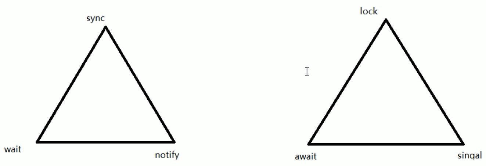
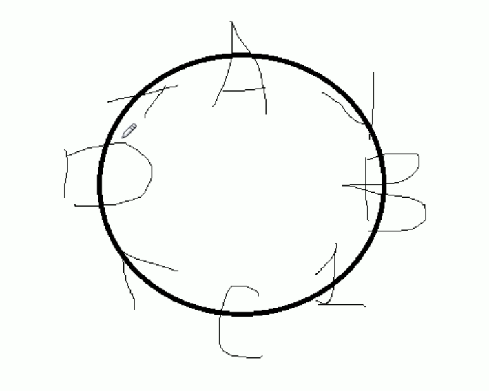

Synchronized和Lock的区别
前言
早期的时候我们对线程的主要操作为：
然后后面出现了替代方案

问题
synchronized 和 lock 有什么区别？用新的lock有什么好处？举例说明
- synchronized 和 lock 有什么区别？用新的lock有什么好处？举例说明
1）synchronized属于JVM层面，属于java的关键字
- monitorenter（底层是通过monitor对象来完成，其实wait/notify等方法也依赖于monitor对象 只能在同步块或者方法中才能调用 wait/ notify等方法）
- Lock是具体类（java.util.concurrent.locks.Lock）是api层面的锁
2）使用方法：
3）等待是否中断
- synchronized：不可中断，除非抛出异常或者正常运行完成
- ReentrantLock：可中断，可以设置超时方法
- 设置超时方法，trylock(long timeout, TimeUnit unit)
- lockInterrupible() 放代码块中，调用interrupt() 方法可以中断
4）加锁是否公平
- synchronized：非公平锁
- ReentrantLock：默认非公平锁，构造函数可以传递boolean值，true为公平锁，false为非公平锁
5）锁绑定多个条件Condition
- synchronized：没有，要么随机，要么全部唤醒
- ReentrantLock：用来实现分组唤醒需要唤醒的线程，可以精确唤醒，而不是像synchronized那样，要么随机，要么全部唤醒
举例
针对刚刚提到的区别的第5条，我们有下面这样的一个场景
1
2
3
4
5
6
| 题目：多线程之间按顺序调用，实现 A-> B -> C 三个线程启动，要求如下：
AA打印5次，BB打印10次，CC打印15次
紧接着
AA打印5次，BB打印10次，CC打印15次
..
来10轮
|
我们会发现，这样的场景在使用synchronized来完成的话，会非常的困难，但是使用lock就非常方便了
也就是我们需要实现一个链式唤醒的操作

当A线程执行完后，B线程才能执行，然后B线程执行完成后，C线程才执行
首先我们需要创建一个重入锁
1
2
| // 创建一个重入锁
private Lock lock = new ReentrantLock();
|
然后定义三个条件，也可以称为锁的钥匙，通过它就可以获取到锁，进入到方法里面
1
2
3
4
| // 这三个相当于备用钥匙
private Condition condition1 = lock.newCondition();
private Condition condition2 = lock.newCondition();
private Condition condition3 = lock.newCondition();
|
然后开始记住锁的三部曲： 判断 干活 唤醒
这里的判断，为了避免虚假唤醒，一定要采用 while
干活就是把需要的内容，打印出来
唤醒的话，就是修改资源类的值，然后精准唤醒线程进行干活：这里A 唤醒B， B唤醒C，C又唤醒A
1
2
3
4
5
6
7
8
9
10
11
12
13
14
15
16
17
18
19
20
21
22
23
24
| public void print5() {
lock.lock();
try {
// 判断
while(number != 1) {
// 不等于1，需要等待
condition1.await();
}
// 干活
for (int i = 0; i < 5; i++) {
System.out.println(Thread.currentThread().getName() + "\t " + number + "\t" + i);
}
// 唤醒 （干完活后，需要通知B线程执行）
number = 2;
// 通知2号去干活了
condition2.signal();
} catch (Exception e) {
e.printStackTrace();
} finally {
lock.unlock();
}
|
1
2
3
4
5
6
7
8
9
10
11
12
13
14
15
16
17
18
19
20
21
22
23
24
25
26
27
28
29
30
31
32
33
34
35
36
37
38
39
40
41
42
43
44
45
46
47
48
49
50
51
52
53
54
55
56
57
58
59
60
61
62
63
64
65
66
67
68
69
70
71
72
73
74
75
76
77
78
79
80
81
82
83
84
85
86
87
88
89
90
91
92
93
94
95
96
97
98
99
100
101
102
103
104
105
106
107
108
109
110
111
112
113
114
115
116
117
118
119
120
121
| /**
* Synchronized 和 Lock的区别
* @author: ylyang
*/
class ShareResource {
// A 1 B 2 c 3
private int number = 1;
// 创建一个重入锁
private Lock lock = new ReentrantLock();
// 这三个相当于备用钥匙
private Condition condition1 = lock.newCondition();
private Condition condition2 = lock.newCondition();
private Condition condition3 = lock.newCondition();
public void print5() {
lock.lock();
try {
// 判断
while(number != 1) {
// 不等于1，需要等待
condition1.await();
}
// 干活
for (int i = 0; i < 5; i++) {
System.out.println(Thread.currentThread().getName() + "\t " + number + "\t" + i);
}
// 唤醒 （干完活后，需要通知B线程执行）
number = 2;
// 通知2号去干活了
condition2.signal();
} catch (Exception e) {
e.printStackTrace();
} finally {
lock.unlock();
}
}
public void print10() {
lock.lock();
try {
// 判断
while(number != 2) {
// 不等于1，需要等待
condition2.await();
}
// 干活
for (int i = 0; i < 10; i++) {
System.out.println(Thread.currentThread().getName() + "\t " + number + "\t" + i);
}
// 唤醒 （干完活后，需要通知C线程执行）
number = 3;
// 通知2号去干活了
condition3.signal();
} catch (Exception e) {
e.printStackTrace();
} finally {
lock.unlock();
}
}
public void print15() {
lock.lock();
try {
// 判断
while(number != 3) {
// 不等于1，需要等待
condition3.await();
}
// 干活
for (int i = 0; i < 15; i++) {
System.out.println(Thread.currentThread().getName() + "\t " + number + "\t" + i);
}
// 唤醒 （干完活后，需要通知C线程执行）
number = 1;
// 通知1号去干活了
condition1.signal();
} catch (Exception e) {
e.printStackTrace();
} finally {
lock.unlock();
}
}
}
public class SyncAndReentrantLockDemo {
public static void main(String[] args) {
ShareResource shareResource = new ShareResource();
new Thread(() -> {
for (int i = 0; i < 10; i++) {
shareResource.print5();
}
}, "A").start();
new Thread(() -> {
for (int i = 0; i < 10; i++) {
shareResource.print10();
}
}, "B").start();
new Thread(() -> {
for (int i = 0; i < 10; i++) {
shareResource.print15();
}
}, "C").start();
}
}
|